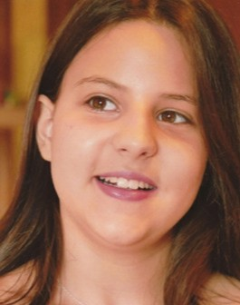

Informatics Engineering student at ISEP (BSc, 2026) specializing in AI/ML and cloud architecture. AWS-certified in Machine Learning and Solutions Architecture with hands-on experience building intelligent recommendation systems and data-driven applications. Proficient in Python, ML frameworks, and cloud technologies.